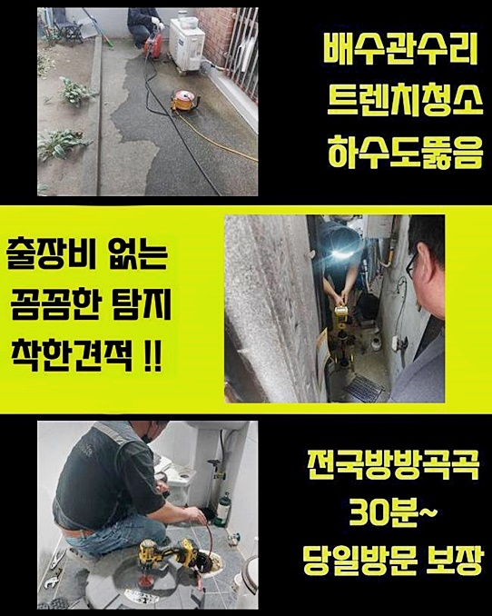
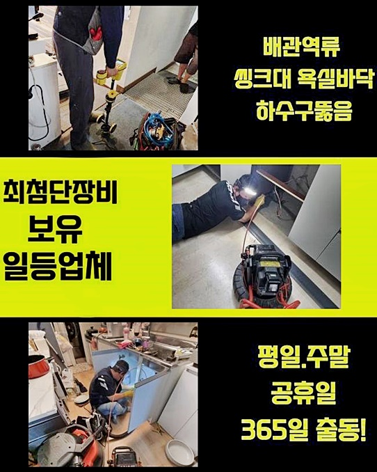
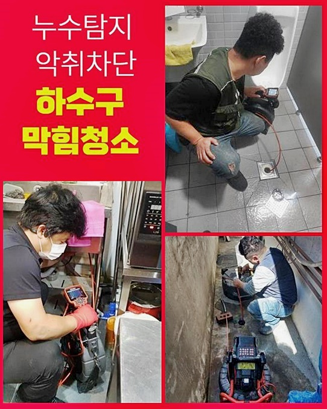
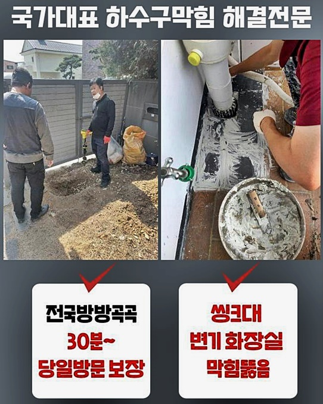
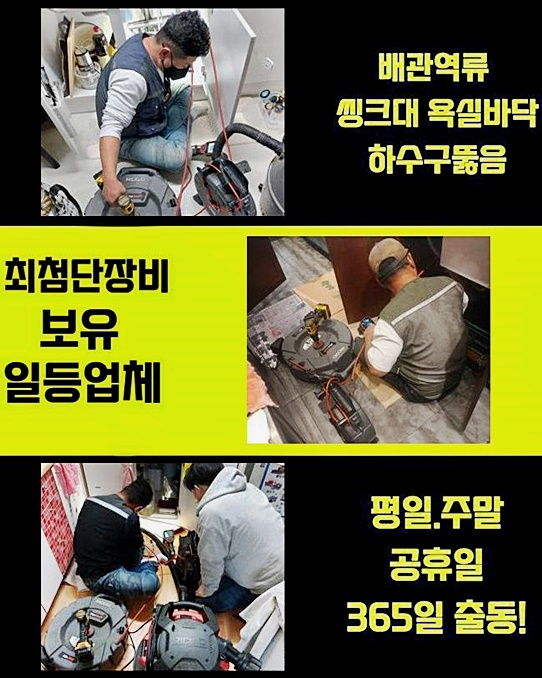
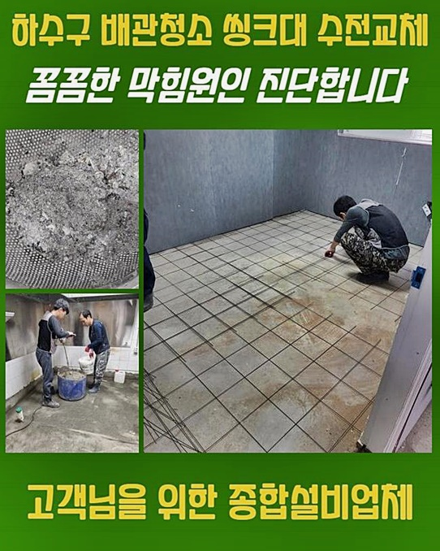

🏠 동대문 제기동하수도막힘 휘경동 하수구뚫어주는업체 누수공사
용인시 처인구 배관막힘 전문 시공 후기

📋 작업 개요
- 위치: 용인시 처인구, 수원시 영통구, 화성시 동탄
- 서비스 유형: 배관막힘, 누수수리, 내시경점검
- 작업 일시:
- 업체명: 하수구수사대 (010-5615-2118)
🔍 문제 상황
동대문 제기동하수도막힘 휘경동 하수구뚫어주는업체 누수공사
집안에 있다보면 어느순간 혼탁한 향이 나고 벌레까지 올라오는 걸 간혹 직접 눈으로 보면 뭔가 걸려있는 걸까 노심초사하실 것입니다
냄새나는 증상과 함께 더 고통스럽게 만드는 것은 느릿느릿 물이 이동하다가 이런 과정들이 길어지면 화장실 배수구 막힘으로 도미노처럼 연쇄적으로 일어납니다
어떤 부위가 문제인지는 첨단 장치를 적용하지 않을 경우에는 좀처럼 알기 힘드니 배관에 대한 프로에게 뚫음 업무를 맡겨서 해소를 하는 것이 좋은 방법이 됩니다
실내 욕실의 타일 근방 배수 구멍이 차단되어 시공을 의뢰하셔서 직접 가게 된 현장인데 갑작스레 사용용수가 눈에 띄게 느리게 배출 되었다면서 말씀을 해주셨습니다
원래는 샤워한 다음에 잠시 뒤에 안에 가보면 내부에 잔여하지 않고 빠져서 전과 동일하게 오래 써서 그런가 여겼는데 외출 후에 돌아온 시점까지도 전에 고인 물 그대로 폐기가 되지 않아서 충격을 금치못하셨다 해요
고장이 난 욕실로 가서 관찰해보니 액체가 역행하는 상황이었고 적체된 수분의 양이 늘어나서 출입구 근방까지 수돗물이 찰랑대는 중이던 불통이 조성된 것입니다
흡수력이 있는 석션으로 고인 물을 덜어내 드리면서 일차적인 정돈을 해주었는데 노즐로 물기를 비롯한 노폐물들이 딸려 올라왔죠

🔎 원인 분석
💡 전문가 진단: 정밀 진단 장비를 사용하여 슬러지의 고착 여부를 판명하고 타격/세척 작업을 실시했습니다.
사태가 가장 심각하던 통로 차단의 기점은 완전히 소거되지는 않아보여서 해당 시설 특화된 촬영 기기를 이용해 관측을 시도함으로써 내부 환경을 무결점으로 담당해 드리기로 했죠
이러한 첨단 카메라 기기는 청소기랑은 차원이 다르게 우수한 파워가 있는데 장치의 끝을 넣어서 호스 외의 틈새는 손바닥 등으로 막아서면 더 아랫부분에 고여있는 오염 요소들도 철저하게 바깥으로 뺄 수 있어요
단순 흡입으로는 고인 찌꺼기를 죄다 없애주기에는 디테일한 측면이 약하기에 통로가 꽤나 확보되면 촬영 장치를 주입시켜 본격적인 탐사를 합니다
욕실바닥을 침수되게 만든 대상이 어떤 구성인지에 따라서 적용하는 청소장비도 상이해 지니 시행착오를 줄이려면 뭐 때문인지 지적하는게 초석이 되어야 해요
이 고성능의 관찰 장비는 바닥부에서 진입시키면 폐수시설로 이어지는 영역까지 내측 상황을 알아차릴 수 있으며 미세한 실금과 같은 손상부도 알아낼 수 있어서 청소장비를 갖다대기 전에 속성과 위험도를 파악하기 많은 공헌을 하는 작업입니다
정밀 진단 결과로 타일과 가까운 쪽에서 몰탈 반죽같은 이물질이 강하게 결속된 상태였고 더 깊이 내려가보니 기름질의 뭉치들이 뱀처럼 또아리를 틀고 있었죠
이런 석회질이 자리한 리노베이션 등의 작업을 수행하는 과정에서 가루가 흘러내려가 버려서 안에서 양생과정을 거치는 케이스가 제법 많습니다
수돗물에 혼재되어 있는 칼슘 및 마그네슘이 다른 머리카락 등과 함께 조직화가 되면서 그 덩어리의 크기가 확장되어 가면서 욕실의 배수 장애가 나타나기도 해요

🔧 작업 과정
진입이 쉬운 상위의 견고한 석회층은 덩어리를 희석하게 돕는 용해시키는 분해제를 주입해 살살 녹여준 다음에 기다린 다음 물을 쏟아 부어주는 것으로 개별로 떨어뜨린 다음 정돈을 해주기로 결정했어요
보통 건축시멘트가 얼마만큼 짱짱한 지는 여러 고객님들도 인지하는 부분일텐데 실제로 파괴력이 상당한 스케일링 도구라거나 드릴 및 스프링이라도 적절한 세기를 넘어버리면 배수로에 스크래치가 생겨요
딱딱한 고체를 부드럽게 물성을 약화시킨 다음에 구체적인 단계를 이어간다면 쉽게 무결한 환경 조성까지도 수행할 수 있답니다
거대한 벽과 같던 석회를 일단 해결하고 나면 더 깊이 있는 세제나 모발 종류 등의 오염원까지 긴 라인에 해당하는 물질을 긁어내는 스케일링을 시행합니다
여러 기능이 장착된 샤프트의 얇은 헤드부를 집어넣게 된다면 원형으로 돌아가면서 찐득한 이물질부터 말라붙은 돌덩이까지도 파편화를 내주게 됩니다
얼마나 큰 직경의 배관이라도 처리해 낼 수 있도록 고도화를 시켜준 고기능의 툴이니 끝부분의 체인이 진동해도 별 걱정없이 시공을 이어갈 수 있으며 슬림해서 더 심화된 깊이까지 들어갈 수 있기 때문에 속시원한 청소가 달성돼요
플렉스샤프트 장비를 활용해 작업을 시행할 때는 옆으로 배관카메라까지 넣어 실시간 관찰을 하면서 이물질이 어느 부분에 많이 집중되었는지 체크하여 완결성이 높은 작업을 진행합니다
욕실 바닥부에 있는 배수로는 탈락한 모발 및 각질층이 합쳐지면서 기름기랑 만나 슬러지 형태로 변모하니 거름망을 하수구 위에 신설하는 것을 간단하며 효과가 좋아요
흙의 굵은 입자들이 기름층과 결합한다면 제거가 난감한 수준으로 양생이 되어서 벽에 단단히 고정되어서 군집체의 크기가 확대되가며 틈을 아예 없애버려서 누수까지 촉발하는 상태까지 치닫게 되기도 해요
소거하다가 끌어올려서 표면을 닦아내 주면서 계속 밑으로 내려갔는데 배관 속이 넓어지는 것이 모니터에 고스란히 보였네요
내부를 꼼꼼히 긁어내는 업무를 끝까지 처리해 준다면 벽체가 광택 나도록 변화하니 끈적한 물질이 운송되더라도 자연스레 하부로 휩쓸려서 빠져나가게 되므로 화장실의 막힘 이슈가 있다면 전용 장비와 기술력을 바탕으로 간편히 보수해드리고 있어요
작은 크기로 나뉘어진 습식청소기를 재가동하여 끝까지 끌어당겨 주는데 석션작업으로 인해 내부가 내부가 메마르면 소량의 온수를 조금씩 흘려 내리면서 잔량이 생기지 않게 마무리 단계를 수행해 나가요
플렉스샤프트와 석션기는 배관 청소를 임할 때 불가분의 관계성을 가진 조합으로 잘게 쪼개주고 흡입하는 조합이 만족스럽습니다

✅ 작업 완료
배관 세정을 끝낸다면 내시경장치로 최종 점검을 해보며 남아있는 이물질들이 없다는 사실을 인지하고 물길이 잘 열렸나 물을 켜봐요
다량의 물을 모아 보내서 느릿하던 물의 배출이 존재하지 않는 걸 확인하고 장비를 철수시켰고 후일에 청소된 화장실을 쓰면서 명심해야 하는 사항도 같이 전달드렸답니다
석회덩어리와 슬러지들로 막혀버린 배관은 갖은 도구를 써도 헛물켜는 결과를 낳는데 그날 바로 시원하게 뚫어줄 수 있는 실력있는 업체를 구하신다면 하단 전화번호로 소통 걸어주세요!
설비에 대해 의아한 점들이 남아있는 경우라면 언제라도 질문 던져주셔도 좋으니까 찾아주시길 바랍니다




⚠️ 하수구 배관 막힘 예방 및 관리 가이드
- ✅ 머리카락, 비닐, 물티슈 등 물에 분해되지 않는 이물질은 절대 흘려보내지 마세요.
- ✅ 기름기 많은 식기는 설거지 전 키친타올로 먼저 기름때를 닦아내세요.
- ✅ 주기적으로 배수구에 뜨거운 물을 가득 부어주어 유지방 고착을 방지하세요.
- ✅ 작업 후 1년 이내 재발 시 무상 A/S 보증 서비스를 제공합니다.
💡 핵심 정리
- 확실한 장비 작업(내시경 점검 및 샤프트 스케일링)으로 원인을 뿌리 뽑습니다.
- 작업 후 1년 이내에 동일한 부위 재발 시 100% 무상 A/S 서비스를 보장합니다.
- 서울 · 경기 · 인천 전 지역에 24시간 언제든 긴급 출동할 수 있도록 항시 대기 중입니다.
❓ 자주 묻는 질문 (FAQ)
🚨 용인시 처인구 배관막힘 문제로 고민이신가요?
정확한 원인 진단과 확실한 시공으로 재발 없는 해결을 약속드립니다.
24시간 긴급 출동 | 서울 · 경기 · 인천 전지역 | 1년 내 재발 시 무상 A/S